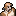
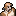

-
 [A lire] Je débute - Partie 1
[A lire] Je débute - Partie 1
-
[A lire] Je débute - Partie 2
-
[A lire] Je débute - Partie 3
-
Carte et terminaux du vaisseau
-
Légendes urbaines et mythes
-
Être mush - Premiers pas
-
Être mush - Tutoriel avancé
-
Compétences, mon compte, klix
-
Logs - Explications
-
Faire du roleplay
-
Guide de Survie (J10+)
-
Frieda - Tutoriel
-
Gioele - Tutoriel
-
Hua - Tutoriel
-
Roland - Tutoriel
-
Chun - Premiers pas
-
Chun - Tutoriel avancé
-
Eleesha - Premiers pas
-
Eleesha - Tutoriel avancé
-
Ian - Premiers pas
-
Ian - Tuto avancé
-
Janice - Premiers pas
-
Janice - Tutoriel avancé
-
Jin Su - Premiers pas
-
Jin Su - Tutoriel avancé
-
Kuan Ti - Premiers pas
-
Kuan Ti - Tutoriel avancé
-
Paola - Premiers pas
-
Paola - Tutoriel avancé
-
Raluca - Premiers pas
-
Raluca - Tutoriel avancé
-
Stephen - Premiers pas
-
Stephen - Tutoriel avancé
-
Terrence - Premiers Pas
-
Terrence - Tutoriel avancé
-
Finola - Tutoriel
-
Chao - Premiers Pas
-
Chao - Tutoriel avancé
-
Andie - Premiers pas
-
Andie - Tutoriel avancé
-
Derek - Tutoriel
-
Thème : L'astrophysique
-
Thème - La mécanique
-
L'enquête - Premiers pas
-
L'enquête - Avancé
-
Thème - La botanique
-
Recherches, projets et relais.
-
Thème : Le pilotage
-
Thème - Les expéditions
-
Titre : Responsable comm.
-
Titre : Commandant
-
Titre : Administrateur NERON
Thème - Les expéditions
Pour qu'un vaisseau puisse subsister, il est primordial qu'il aille se ravitailler (en nourriture, en fuel, en oxygène, etc...) régulièrement sur des planètes dénichées grâce aux astrophysiciens à bord du Daedalus.
Une fois le vaisseau déplacé sur la planète en question, une équipe d'exploration doit alors être formée afin d'y récolter les ressources d'intérêt.
 Les
astrophysiciens ne sont pas les seuls à pouvoir scanner et analyser une
planète. Mais, C'est une tâche énergivore et ils possèdent un bonus non
négligeable pour cette tâche.
Les
astrophysiciens ne sont pas les seuls à pouvoir scanner et analyser une
planète. Mais, C'est une tâche énergivore et ils possèdent un bonus non
négligeable pour cette tâche.
1) Que peut-on récolter sur une planète et dans quels secteurs ?
 De l'oxygène (
De l'oxygène ( ) ! Cette ressource est indispensable pour que l'équipage puisse continuer son voyage sans mourir d'asphyxie.
) ! Cette ressource est indispensable pour que l'équipage puisse continuer son voyage sans mourir d'asphyxie.
Secteur : Oxygène.
 Du fuel () ! Pour pouvoir continuer à voyager sans tomber en panne de carburant.
Du fuel () ! Pour pouvoir continuer à voyager sans tomber en panne de carburant.
Secteurs : hydrocarbure en priorité, puis grotte, épave et éventuellement montagne.

 Des steaks aliens ! Car un équipage mine de rien, ça a très faim !
Des steaks aliens ! Car un équipage mine de rien, ça a très faim !
Secteurs : ruminants en priorité puis vie intelligente, voire océan, prédateur et insecte.
 Des fruits ! Pour le jardin de
Des fruits ! Pour le jardin de  Ian, pour soigner des maladies (), pour le moral (
Ian, pour soigner des maladies (), pour le moral ( )...
)...
Secteurs : verger en priorité puis marais, température haute, forêt voire montagne.
 Des artefacts ! Ce sont des objets aliens rares pouvant s'avérer très pratiques et vous simplifier la vie au quotidien.
Des artefacts ! Ce sont des objets aliens rares pouvant s'avérer très pratiques et vous simplifier la vie au quotidien.
Secteurs : vie intelligente, ruine, épave voire grotte et mankarog.
 Des morceaux de carte stellaire ! Avec 3 morceaux, vous pourrez alors calculer les coordonnées de l'Eden tant convoité.
Des morceaux de carte stellaire ! Avec 3 morceaux, vous pourrez alors calculer les coordonnées de l'Eden tant convoité.
Secteurs : cristallite ou au hasard parmi les artefacts.
2) Quels sont les dangers ?
Mais
attention, les expéditions comportent aussi de nombreux dangers...
N'est pas Indiana Jones qui veut ! En effet, il est important de garder
un œil sur sa santé ( )
et son équipement quand on part en expédition, car malgré toutes les
jolies découvertes que vous pourrez y faire, de nombreux dangers
rôdent...
)
et son équipement quand on part en expédition, car malgré toutes les
jolies découvertes que vous pourrez y faire, de nombreux dangers
rôdent...
 Les combats : Certaines créatures peuvent être hostiles et vous attaquer. La présence d'un joueur ayant la compétence Diplomate
permet d'éviter les combats. En l'absence de diplomate, il est
préférable de prendre des armes (blasters, couteau, etc...) afin
d'éviter que l'expédition tourne au massacre.
Les combats : Certaines créatures peuvent être hostiles et vous attaquer. La présence d'un joueur ayant la compétence Diplomate
permet d'éviter les combats. En l'absence de diplomate, il est
préférable de prendre des armes (blasters, couteau, etc...) afin
d'éviter que l'expédition tourne au massacre. Même si un diplomate vous accompagne, vous n'évitez pas les accidents et pouvez perdre beaucoup de vie. Pour éviter d'être démuni si un diplomate se perd et si vous n'avez pas d'armes, confiez-lui la boussole.
Même si un diplomate vous accompagne, vous n'évitez pas les accidents et pouvez perdre beaucoup de vie. Pour éviter d'être démuni si un diplomate se perd et si vous n'avez pas d'armes, confiez-lui la boussole.
 Les accidents : Ils ne touchent qu'une personne à la fois mais font mal : entre 3 et 5 de perdu pour la personne touchée.
Les accidents : Ils ne touchent qu'une personne à la fois mais font mal : entre 3 et 5 de perdu pour la personne touchée.
 La fatigue
: Certains événements peuvent être pénibles à endurer pour l'équipe
d'expédition. Toute l'équipe d'exploration perdra 2 points de vie si cet
événement a lieu. Cela peut vite se cumuler...
La fatigue
: Certains événements peuvent être pénibles à endurer pour l'équipe
d'expédition. Toute l'équipe d'exploration perdra 2 points de vie si cet
événement a lieu. Cela peut vite se cumuler...
 Les perdus
: Il est possible de se perdre sur certains secteurs. Si, en cours de
route, le perdu n'est pas retrouvé, il faudra repartir sur la planète
pour le chercher. Malheureusement, le perdu n'est pas toujours récupéré
en entier...
Les perdus
: Il est possible de se perdre sur certains secteurs. Si, en cours de
route, le perdu n'est pas retrouvé, il faudra repartir sur la planète
pour le chercher. Malheureusement, le perdu n'est pas toujours récupéré
en entier... 
 Les pertes d'objets
: Tout comme il est possible de se perdre, il est possible de perdre un
objet sur certains secteurs (Vie Intelligente / Vent fort). Il vaut
mieux prévoir de poser vos talkies-walkies / iTrackies si vous prévoyez
d'explorer une planète qui comporte de tels risques. Sinon, vous pourrez
vous les faire voler et il ne sera plus facile de communiquer...
Les pertes d'objets
: Tout comme il est possible de se perdre, il est possible de perdre un
objet sur certains secteurs (Vie Intelligente / Vent fort). Il vaut
mieux prévoir de poser vos talkies-walkies / iTrackies si vous prévoyez
d'explorer une planète qui comporte de tels risques. Sinon, vous pourrez
vous les faire voler et il ne sera plus facile de communiquer... 
 AstucePour
réduire les risques de perdre un objet important, comblez vos poches
avec de l'équipement inutile comme des post-it ou des débris plastiques.
AstucePour
réduire les risques de perdre un objet important, comblez vos poches
avec de l'équipement inutile comme des post-it ou des débris plastiques.
 Les morts subites
: Elles peuvent survenir sur les secteurs Mankarog (~ 40% de chance
qu'un équipier du corps expéditionnaire meurt !) ou sismique (~ 10% de
chance qu'un équipier du corps expéditionnaire meurt !) ou volcan (~ 10%
de chance que la TOTALITÉ du corps expéditionnaire ET du vaisseau
d'exploration, l'Icarus, soient perdus !). Il est donc préférable
d'éviter ces secteurs autant que possible, à moins d'avoir le goût du
risque ou en cas d'extrême nécessité.
Les morts subites
: Elles peuvent survenir sur les secteurs Mankarog (~ 40% de chance
qu'un équipier du corps expéditionnaire meurt !) ou sismique (~ 10% de
chance qu'un équipier du corps expéditionnaire meurt !) ou volcan (~ 10%
de chance que la TOTALITÉ du corps expéditionnaire ET du vaisseau
d'exploration, l'Icarus, soient perdus !). Il est donc préférable
d'éviter ces secteurs autant que possible, à moins d'avoir le goût du
risque ou en cas d'extrême nécessité.
3) Comment se déroule une expédition ?
 Rassembler un corps expéditionnaire :
Rassembler un corps expéditionnaire :
Il faut se rendre en Baie Icarus. C'est de là que l'équipe d'exploration embarque dans l'Icarus qui pourra accomplir le trajet vers la planète à explorer. L'Icarus peut transporter 4 explorateurs, voire 6 avec le projet agrandissement de la cale. Pendant ce temps, il est utile (si ce n'est vital) de se préparer (vérifier sa santé et soigner si besoin), et prendre le matériel adéquat (nous y reviendrons en détail plus bas !).
Il
est possible de faire une expédition seul en patrouilleur. Mais, vous
ne pouvez parcourir que 3 secteurs contre 9 secteurs avec l'Icarus... A
utiliser en dernier recours (2 PA pour décoller + 4 PA pour explorer + 2
PA pour atterrir).
 Décoller vers la planète :
Décoller vers la planète :
Quand tout le monde est prêt, un pilote peut lancer l'expédition pour 4 PA. Un
non pilote peut également faire décoller l'icarus si le verrou pilotage
est débloqué via le terminal BIOS au nexus. Si un pilote est présent
parmi les explorateurs, l'atterrissage se fera sans encombre... Dans le
cas contraire, attention à vous !
AstuceRegardez votre horloge
avant de partir. Une expédition se compte par dizaines de minutes.
Ainsi, partir à 12h13 ou à 12h19 est la même chose, pas de perte de
temps car votre premier secteur sera exploré à 12h20. N'hésitez pas à
exploiter ces minutes avant de partir. Un équipier pourrait vous
rejoindre au dernier moment !
Ainsi, chaque secteur = 10 min
d'exploration. Prévoyez de partir assez tôt pour ne pas subir un
changement de cycle alors que vous êtes sur une planète, car vous
subirez les possibles dégâts provoqués par un événement spécifique en
baie icarus (incendie, plaque, secousse). Perdre de la vie de cette
façon est un danger supplémentaire pour vous.
 Profiter du voyage :
Profiter du voyage :
Une fois l'expédition lancée, vous n'avez plus de contrôle (autre que l'usage de la parole) sur votre personnage jusqu'à la fin de celle-ci. L'expédition est découpée automatiquement en une phase d'atterrissage, et un événement par secteur visité. Par défaut les cycles durant 3h, chaque étape dure 10 min. Pour chaque secteur parcouru, il y a plusieurs possibilités d’événements. Seul le hasard vous dira sur lesquels vous tomberez...
Enfin, l'Icarus rentrera tout seul sur le Daedalus une fois que la planète sera entièrement visitée, ou si le maximum de secteurs par expédition est atteint. Ordre de grandeur de la durée d'une expédition : 1h30. Il se peut toutefois que vous n'ayez pas eu le temps de tout visiter sur la planète en une fois (si la planète comporte plus de 9 secteurs), il sera alors peut-être nécessaire, si cela en vaut la chandelle, de relancer une seconde expédition pour finir de tout explorer.
 Apprécier le résultat :
Apprécier le résultat :
De retour en Baie Icarus, le rapport d'expédition vous est donné. Partagez le lien avec vos coéquipiers restés à bord.
Les
éventuels stocks de fuel et d'oxygène ont été mis à jour. L'étagère de
la Baie Icarus est alors remplie de tous les fruits, steaks, et
artefacts ramenés. Si
vous ramenez des steaks aliens n'oubliez pas de les hypergeler avec le
supergélateur pour qu'ils deviennent des rations saines.
1) Quels sont les objets utiles ?
Certains objets sont à votre disposition pour vous équiper en expédition :
 Les combinaisons
: Indispensables si la planète ne comporte pas d'oxygène. Si vous
l'oubliez, vous restez coincés dans la Baie Icarus et pénalisez votre
équipage.
Les combinaisons
: Indispensables si la planète ne comporte pas d'oxygène. Si vous
l'oubliez, vous restez coincés dans la Baie Icarus et pénalisez votre
équipage.
 La boussole : Protège un équipier de l’événement perdu, et tous les équipiers de l’événement errance. A réserver de préférence au diplomate ou au pilote de l'expédition.
La boussole : Protège un équipier de l’événement perdu, et tous les équipiers de l’événement errance. A réserver de préférence au diplomate ou au pilote de l'expédition.
 La foreuse
: Permet de doubler les gains d'hydrocarbure. Très utile ! Mais
attention à ne la prendre que si besoin, au risque de vous la faire
voler pas des aliens chapardeurs...
La foreuse
: Permet de doubler les gains d'hydrocarbure. Très utile ! Mais
attention à ne la prendre que si besoin, au risque de vous la faire
voler pas des aliens chapardeurs...
 Les cordes : Protège le porteur durant les accidents dans les montagnes, grottes et régions sismiques.
Les cordes : Protège le porteur durant les accidents dans les montagnes, grottes et régions sismiques.
 Les armes
: Si vous n'avez pas de diplomate avec vous, elles réduiront les dégâts
que vous prendrez en cas de combat contre les aliens. Si vous avez un
diplomate, elles sont inutiles. Vous aurez toujours à bord du Daedalus
au moins 2 blasters, un couteau et une grenade, soit respectivement les
trois premières icônes ci-dessous. n'utilisez
la grenade qu'en cas de nécessité, car elle est à usage unique ! De
plus, un membre de l'expédition ne peut se servir que de 2 armes à la
fois. Pensez à bien les répartir.
Les armes
: Si vous n'avez pas de diplomate avec vous, elles réduiront les dégâts
que vous prendrez en cas de combat contre les aliens. Si vous avez un
diplomate, elles sont inutiles. Vous aurez toujours à bord du Daedalus
au moins 2 blasters, un couteau et une grenade, soit respectivement les
trois premières icônes ci-dessous. n'utilisez
la grenade qu'en cas de nécessité, car elle est à usage unique ! De
plus, un membre de l'expédition ne peut se servir que de 2 armes à la
fois. Pensez à bien les répartir.
 Les post-it
: Utiles si vous devez explorer des planètes comportant des secteurs
Vie Intelligente ou Vent Fort. Ils réduiront vos chances de perdre un
objet qui importe.
Les post-it
: Utiles si vous devez explorer des planètes comportant des secteurs
Vie Intelligente ou Vent Fort. Ils réduiront vos chances de perdre un
objet qui importe.
 Le module babel
: Permet de doubler vos chances de récupérer un artefact sur le secteur
Vie Intelligente. Très pratique. Néanmoins, tous les vaisseaux n'ont
pas forcément le plan du module babel à bord !
Le module babel
: Permet de doubler vos chances de récupérer un artefact sur le secteur
Vie Intelligente. Très pratique. Néanmoins, tous les vaisseaux n'ont
pas forcément le plan du module babel à bord !
D'autres équipements peuvent être emportés, moins utiles. On vous laisse les découvrir par vous-même.
2) Quelles sont les compétences utiles ?
 La compétence
La compétence  Diplomate permet d'annuler les probabilités de combat. Très pratique afin d'éviter les prédateurs ou pour négocier avec les aliens. Peuvent être diplomates :
Diplomate permet d'annuler les probabilités de combat. Très pratique afin d'éviter les prédateurs ou pour négocier avec les aliens. Peuvent être diplomates :  Janice (lvl 4), Finola (lvl 4), Andie polyvalent (lvl 3), éventuellement  Stephen avec apprentissage (lvl 5), ou quelqu'un d'autre via un Apprentron.
Janice (lvl 4), Finola (lvl 4), Andie polyvalent (lvl 3), éventuellement  Stephen avec apprentissage (lvl 5), ou quelqu'un d'autre via un Apprentron.
 La compétence
La compétence  Survie
permet de diminuer les dégâts que vous recevez de 1 unité à chaque
événement négatif. Elle permet aussi de ramener un steak de plus à
chaque événement provision et de vous protéger des morts subites au
détriment de vos compagnons d'expédition (Ex : si 4 équipiers font une
expédition, et que l'expédition tombe sur un événement mort subite d'un
équipier : si vous avez la compétence survie, vous avez 0% de chance de
mourir, vos compagnons ont chacun 33%. Si vous n'avez pas la compétence
et que personne d'autre ne l'a, vous avez tous 25% de chance de mourir).
Survie
permet de diminuer les dégâts que vous recevez de 1 unité à chaque
événement négatif. Elle permet aussi de ramener un steak de plus à
chaque événement provision et de vous protéger des morts subites au
détriment de vos compagnons d'expédition (Ex : si 4 équipiers font une
expédition, et que l'expédition tombe sur un événement mort subite d'un
équipier : si vous avez la compétence survie, vous avez 0% de chance de
mourir, vos compagnons ont chacun 33%. Si vous n'avez pas la compétence
et que personne d'autre ne l'a, vous avez tous 25% de chance de mourir).
 La compétence
La compétence  Tireur
permet, si vous portez une arme de tir (type blaster), de compter pour
un point de combat supplémentaire, en plus du bonus de l'arme. Utile,
mais pas indispensable.
Tireur
permet, si vous portez une arme de tir (type blaster), de compter pour
un point de combat supplémentaire, en plus du bonus de l'arme. Utile,
mais pas indispensable.
 La compétence
La compétence  Botaniste ou Polyvalent permet de ramener un fruit en plus à chaque événement récolte.
Botaniste ou Polyvalent permet de ramener un fruit en plus à chaque événement récolte.
 La compétence
La compétence  Sprinter permet de visiter un secteur supplémentaire (10 secteurs au lieu de 9 avec l'Icarus). Peu utile.
Sprinter permet de visiter un secteur supplémentaire (10 secteurs au lieu de 9 avec l'Icarus). Peu utile.
 La compétence Retour arrière
permet d'interrompre une expédition à tout moment. Ainsi, si vous
estimez avoir exploré tous les secteurs utiles mais que l'exploration
est loin d'être terminée et comporte encore des secteurs dangereux à
visiter, vous pouvez rentrer avant le temps imparti. Vous évitant de
graves possibilités de subir des dégâts.
La compétence Retour arrière
permet d'interrompre une expédition à tout moment. Ainsi, si vous
estimez avoir exploré tous les secteurs utiles mais que l'exploration
est loin d'être terminée et comporte encore des secteurs dangereux à
visiter, vous pouvez rentrer avant le temps imparti. Vous évitant de
graves possibilités de subir des dégâts.
3) Qui doit participer à l'expédition ?
La plupart des expéditions étant dangereuses en solo, on préférera attendre d'être rejoint par d'autres compagnons avant de s'aventurer sur des planètes. Pour qu'une expédition soit bien réussie, il est souhaitable que l'équipe d'exploration soit composée de :
 Un pilote qui pourra piloter l'Icarus, sans que celui-ci ne s'écrase.
Un pilote qui pourra piloter l'Icarus, sans que celui-ci ne s'écrase. Un diplomate / polyvalent (s'il y en a), qui vous préservera des combats sur les zones à risque.
Un diplomate / polyvalent (s'il y en a), qui vous préservera des combats sur les zones à risque.  De joyeux lurons motivés pour participer à l'aventure et dont on s'est assuré au préalable de leur santé !
De joyeux lurons motivés pour participer à l'aventure et dont on s'est assuré au préalable de leur santé !
Tant
que les Mushs n'ont pas été éliminés, il convient de prendre quelques
précautions supplémentaires (Vous détesteriez qu'on vous oublie sur la
planète, n'est-ce pas ?). Il est en effet très facile pour les mushs de
se débarrasser d'un seul coup de 4, sinon 6, équipiers humains lors
d'une expédition. Si le Daedalus quitte l'orbite pendant que vous êtes
en exploration... Vous mourrez tous d'un coup .
Il est donc recommandé au Commandant en titre de se joindre à l'expédition et de s'assurer que le bidouilleur soit en lieu sûr (confié à Chun ou à quelqu'un de confiance...).
Voilà
! Vous êtes maintenant fin prêts pour partir en expédition avec vos
compagnons. Si vous voulez en savoir plus, je vous conseille d'aller
lire cette rubrique
qui vous donnera des informations détaillées sur les secteurs et les
événements que vous pourrez rencontrer en expédition (Notamment au
niveau des probabilités des différents événements que vous visiterez !  ).
).